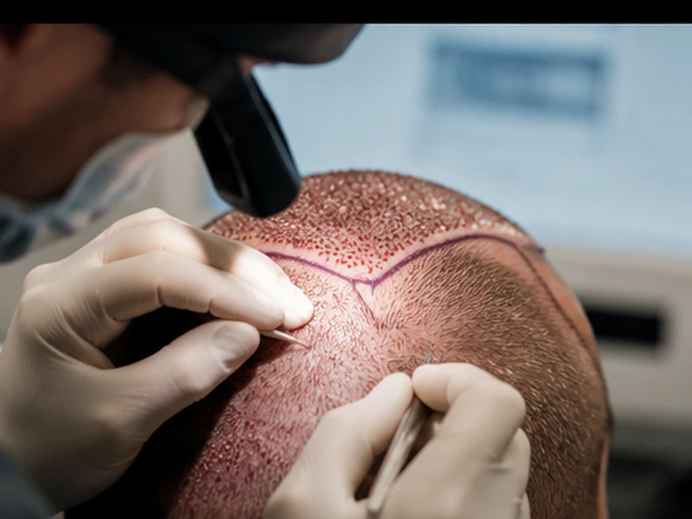

Analiz
Saç durumu, donör alan ve hedef değerlendirilir.
FUE yönteminde foliküler üniteler donör bölgeden tek tek alınır ve planlanan alıcı alanlara doğal çıkış yönleri gözetilerek yerleştirilir.
Ücretsiz danışmanlık →
Doğal görünüm yalnızca alım tekniğine değil; saç çizgisi, açı, yön ve greft dağılımına da bağlıdır.
Saç durumu, donör alan ve hedef değerlendirilir.
Yöntem, saç çizgisi ve işlem kapsamı belirlenir.
İşlem kişiye özel plana göre gerçekleştirilir.
İyileşme ve bakım süreci planlı şekilde takip edilir.
Greft sayısı ve elde edilebilecek sonuç kişiye özeldir.
FUE yönteminde foliküler üniteler donör bölgeden tek tek alınır ve planlanan alıcı alanlara doğal çıkış yönleri gözetilerek yerleştirilir.